Inhalt Index DeskTop Bronstein

 Numerische Mathematik Approximation, Ausgleichsrechnung, Harmonische Analyse Harmonische Analyse Schnelle Fourier-Transformation (FFT)
Numerische Mathematik Approximation, Ausgleichsrechnung, Harmonische Analyse Harmonische Analyse Schnelle Fourier-Transformation (FFT)


Zur numerischen Bestimmung von ck wendet man auf (19.218b) analog zu (19.209) und (19.210) die Trapezformel an und erhält die diskreten komplexen FOURIER-Koeffizienten  :
:
mit
Der Zusammenhang (19.221a) unter Beachtung von (19.221b) wird dann als diskrete komplexe FOURIER-Transformation der Länge N der Werte 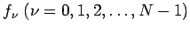 bezeichnet.
Die Potenzen 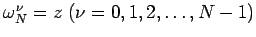 genügen sämtlich der Gleichung zN=1. Sie werden deshalb auch als N-te Einheitswurzel bezeichnet. Wegen 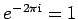 gilt:
| 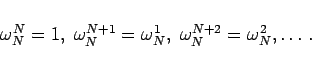 | (19.222) |
Die effektive Berechnung der Summe (19.221a) ergibt sich aus der Tatsache, daß eine diskrete komplexe FOURIER-Transformation der Länge N=2n auf zwei Transformationen der Länge N/2=n in folgender Weise zurückgeführt werden kann:
und berücksichtigt man, daß 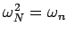 gilt, dann ist
| 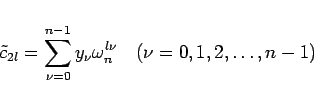 | (19.224) |
die diskrete komplexe FOURIER-Transformation der Werte 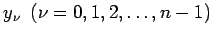 mit der Länge 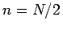.
und beachtet man, daß auch hier gilt, dann ist
| 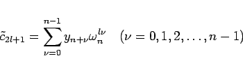 | (19.226) |
die diskrete komplexe FOURIER-Transformation der Werte 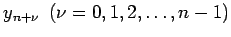 mit der Länge .
Die Reduzierung gemäß a) und b), d.h. die Zurückführung einer diskreten komplexen FOURIER-Transformation auf jeweils zwei diskrete komplexe FOURIER-Transformationen der halben Länge, läßt sich fortsetzen, wenn N eine Potenz von 2 ist, d.h. wenn N = 2p (p natürliche Zahl) gilt. Die p-malige Anwendung der Reduzierung wird als FFT bezeichnet. Da jeder Reduktionsschritt wegen (19.225) N/2 komplexe Multiplikationen erfordert, ist der Rechenaufwand bei der FFT von der Größenordnung
| 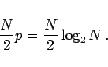 | (19.227) |